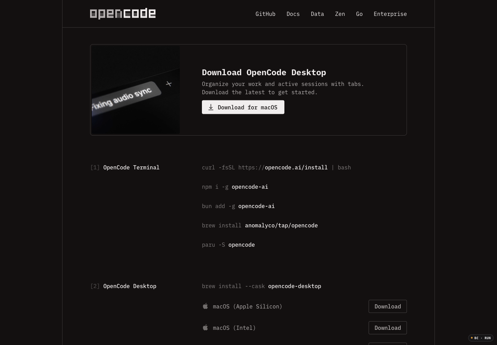
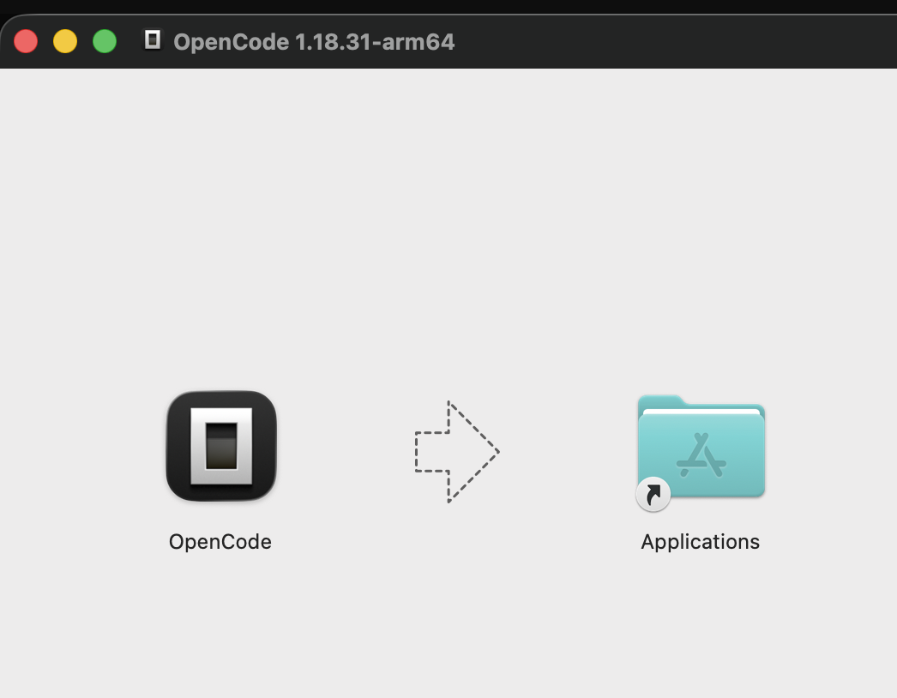
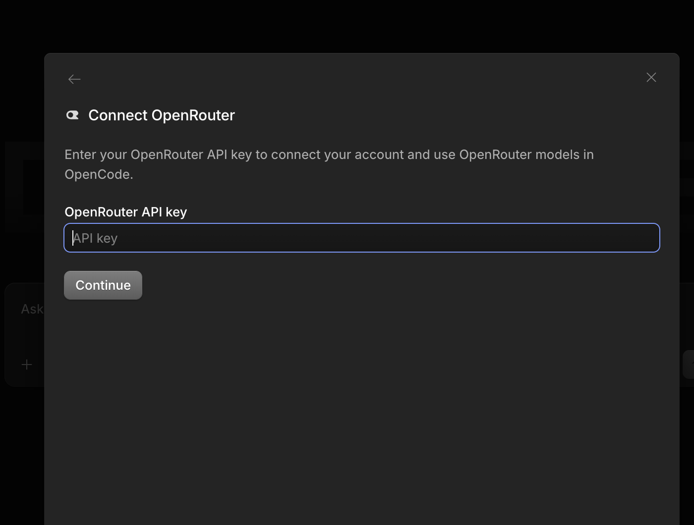
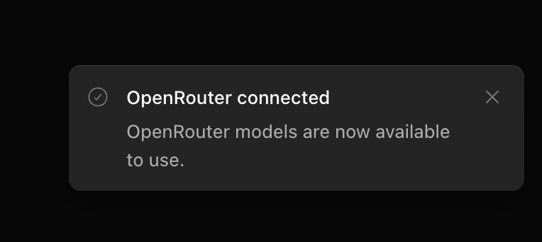
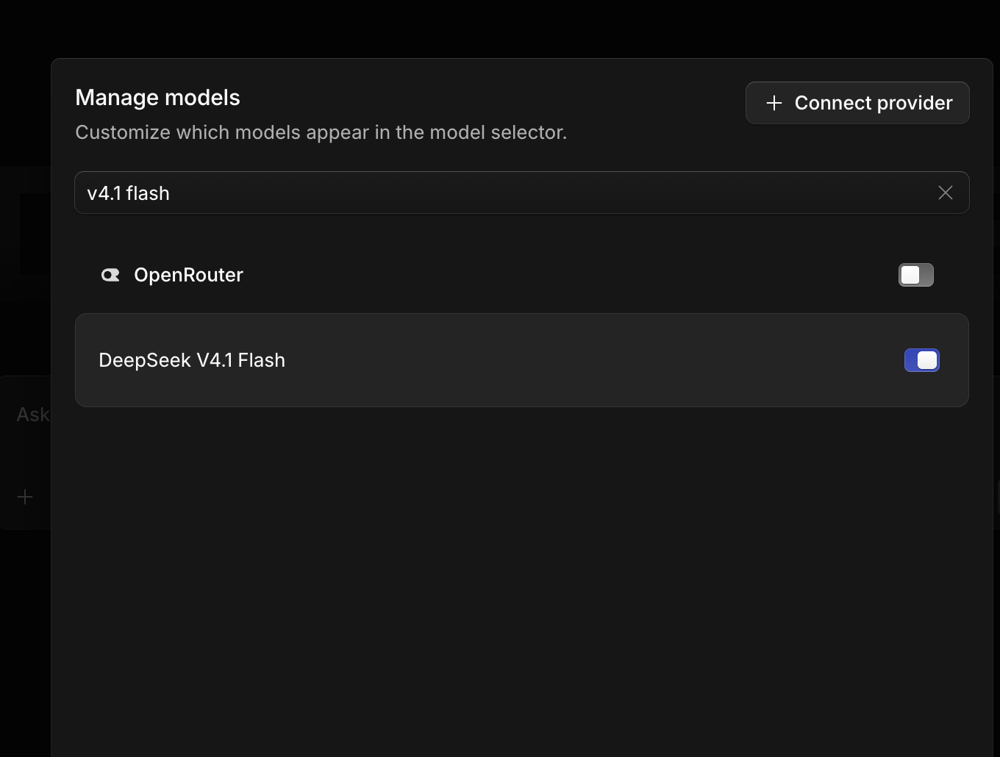
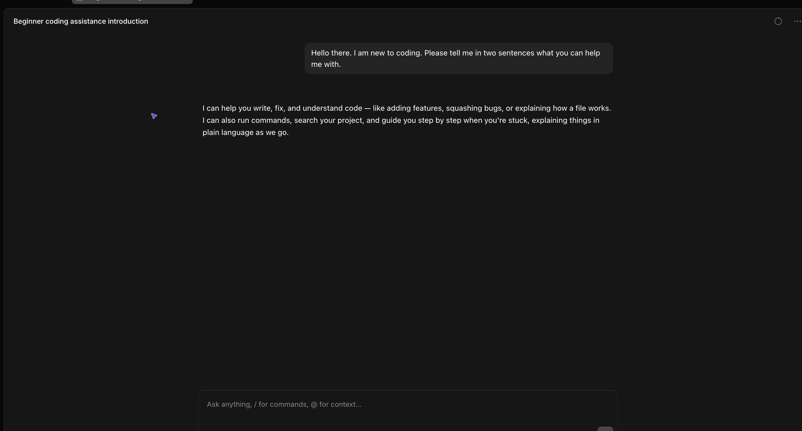

Download the OpenCode app, connect it to OpenRouter, and start asking questions. No terminal, no coding — just a normal Mac app.
About 15 minutes
For macOS
Provider: OpenRouter
Model: DeepSeek V4.1 Flash
The OpenCode start screen: the opencode logo, the message box, and DeepSeek V4.1 Flash already selected.
OpenCode is an AI helper that runs as an app on your Mac. You type to it in plain English, and it can explain code, help with class projects, and walk you through technical tasks. DeepSeek V4.1 Flash is the AI "brain" that writes the answers, and OpenRouter is the service that connects the app to it.
Think of it this way: OpenCode is your phone, OpenRouter is your phone company, and DeepSeek V4.1 Flash is the person you're calling. This guide sets all three up. You won't need to use a terminal or write any code.
Why DeepSeek V4.1 Flash for this class?
Built for this work — it's designed for reasoning and agentic coding with reliable tool use, so it can genuinely help with your class projects.
Open weights — the model itself is openly licensed and inspectable, which fits a making class better than a closed black box.
Big context, tiny cost — it can read entire files (up to 1M tokens) for a fraction of a cent per question, so our shared class budget lasts the term.
One connection — because OpenRouter gives us access to it, you set up one account and one key, and you can explore other models later without starting over.
What you'll need
An Apple laptop running macOS 13 or newer
An internet connection
Your Tufts email — you'll sign up with it in Step 3 to join the class workspace
Nothing to pay — the class budget covers AI usage for your coursework
New word alert.OpenRouter is a website that gives one account access to many AI models from different companies. Instead of signing up for each company separately, you connect OpenRouter once and pick any model you like.
1
Download the OpenCode app
Open your browser and go to opencode.ai/download.
Click the big Download for macOS button. The site automatically picks the right version for your Mac.
The download starts — you'll find the file in your Downloads folder.

Figure 1. The download page. Use the download button in the banner at the top — it detects whether your Mac needs the Apple Silicon or Intel version.
2
Install the app
Open the downloaded file (click it in your Downloads folder, or in the notification Safari shows).
A small window opens showing the OpenCode icon and your Applications folder.
Drag the OpenCode icon onto the Applications folder, exactly like the arrow shows.
Close that window, then open OpenCode from your Applications folder (or press ⌘+Space, type OpenCode, and press Enter).

Figure 2. Installing is just one drag: move the OpenCode icon onto the Applications folder.
macOS says it "cannot verify" the app? That's the standard warning for apps downloaded from the internet. Open your Applications folder, right-click (or Control-click) OpenCode, choose Open, and confirm. You only need to do this once. The app is signed and comes directly from opencode.ai.
3
Join your class on OpenRouter
Your class has its own workspace on OpenRouter. You join it with your Tufts email — no invitation email needed.
Go to openrouter.ai and click Sign Up.
Click the Google button and sign up with your Tufts email (for example yourname@tufts.edu). Using Google skips creating a separate password.
OpenRouter suggests your class workspace — click Request to join.
Your instructor approves the request. The class workspace (for example ENT-164 Intro to Making) then appears in the workspace menu at the top-left of the page.
Use your Tufts email. The class workspace is tied to the tufts.edu domain. If you sign up with a different email, you won't be offered the workspace or access to the class budget.
4
Create your own API key
An API key is a long password that lets the app use OpenRouter on your behalf. Yours will start with sk-or-. Treat it like a bank password: don't share it or post it anywhere.
In the top-left of the page, make sure your class workspace (ENT-164 Intro to Making) is selected — your key belongs to the workspace that's active when you create it.
Open your account menu and click Keys.
Click Create API Key, name it OpenCode, and copy the key — the site shows it only once. Paste it somewhere temporary (Notes is fine) for the next step.
If the workspace shows a credit balance, you're ready to go — and you don't need to add money or a card. The class budget covers your usage.
Your access is on the class budget. The instructor pays for AI usage through a shared class budget, so there's nothing for you to buy. Because that budget is shared, please keep your questions focused on class work and avoid long, off-topic chats — that keeps it available for everyone through the term.
5
Connect OpenRouter in the app
Open OpenCode. At the bottom you'll see the message box and, below it, a button with the current model's name (it starts as Big Pickle).
Click that model button. A panel opens listing models and providers.
Scroll to Add more models from popular providers and click See 70+ more providers.
Find OpenRouter (it's in the Popular section) and click it.
Paste your sk-or-… key into the box and click Continue.

Figure 3. The Connect OpenRouter dialog. Paste the key you copied in Step 4 and click Continue.

Figure 4. Success — a message in the corner confirms OpenRouter connected. You only do this once; the app remembers the key.
6
Choose DeepSeek V4.1 Flash
Click the model button under the message box again, then:
Type v4.1 flash in the search box at the top of the panel.
If DeepSeek V4.1 Flash appears, click it and you're done with this step.
If it doesn't appear yet, click Manage models at the bottom, type v4.1 flash in its search box, and turn on the switch next to DeepSeek V4.1 Flash.
Close that panel, search again in the model list, and click DeepSeek V4.1 Flash.

Figure 5. In Manage models, search for the model and switch it on so it appears in the model list.Figure 6. Back in the model list: type v4.1 and click DeepSeek V4.1 Flash (listed under OpenRouter).
Did it work? The button under the message box now shows DeepSeek V4.1 Flash. That's the model every new question will use.
7
Ask your first question
Click the message box at the bottom that says "Ask anything…".
Type a question in plain English, for example: "I'm new to coding. What can you help me with?"
Press Enter (or click the arrow button at the right) and wait a few seconds.

Figure 7. Your question appears in the bubble at the top; the answer gets written below it. The model's name is always visible under the message box.
To quit: press ⌘+Q like any Mac app. To come back later, just open OpenCode again — your conversations are saved as tabs at the top.
If something goes wrong
What you see
What to do
macOS won't open the app
In Applications, right-click (Control-click) OpenCode and choose Open. If needed: System Settings → Privacy & Security → Open Anyway.
Can't find the provider panel
Click the button showing the current model name, just below the message box. Everything is reached from there.
OpenRouter isn't listed
Make sure you clicked See 70+ more providers — OpenRouter is in the Popular section at the top.
"Invalid API key"
The key was copied incompletely. Create a new key at openrouter.ai (Keys) and paste it again, starting with sk-or-.
An error about credits or balance
Don't add credit yourself. Check that the class workspace is selected at the top-left, then tell your instructor — the shared class budget may be out of funds.
DeepSeek V4.1 Flash isn't in the list
Use Manage models in the model panel, search v4.1 flash, and switch it on.
No answer, or it seems stuck
Wait ten seconds — the first reply can be slow. Check your internet, then ask again. ⌘+Q and reopening also helps.
Words you'll see
OpenCode
The app on your Mac where you chat with the AI.
OpenRouter
The service that connects the app to many AI models. Needs an account and an API key.
API key
A secret password (starts with sk-or-) that lets the app use your OpenRouter account. Never share it.
Provider
The company or service that runs the AI connection — here, OpenRouter.
Model
The specific AI "brain" you talk to — here, DeepSeek V4.1 Flash.
Session / tab
One conversation. Each tab at the top of the app is a separate chat.
Where everything lives
What you want
Where to click
Join the class workspace
Sign up at openrouter.ai with your Tufts email, then Request to join
Create your API key
openrouter.ai → account menu → Keys → Create API Key
Start a new conversation
The + next to the tabs at the very top
Change the model
The model button under the message box (shows "DeepSeek V4.1 Flash")
Connect another provider or fix your key
Model button → See 70+ more providers
Show more models in the list
Model button → Manage models
Quit the app
⌘+Q
Once you're comfortable, the official docs at opencode.ai/docs show what else OpenCode can do. There's no rush — asking questions is a great way to learn.


 ENT-164 · Intro to Making — OpenCode + DeepSeek V4.1 Flash beginner's setup guide for macOS · Screenshots from a live install on macOS · September 18, 2026
ENT-164 · Intro to Making — OpenCode + DeepSeek V4.1 Flash beginner's setup guide for macOS · Screenshots from a live install on macOS · September 18, 2026